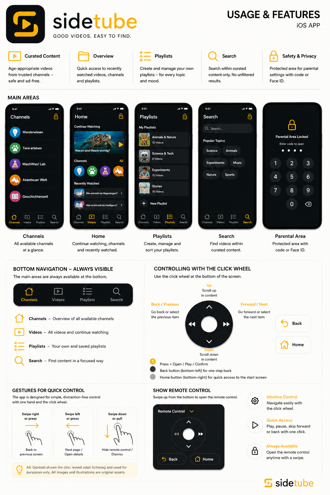

For children
A clear place with familiar categories and a search that only finds approved content.
- Continue watching and library
- Channels and playlists
- Click-wheel control
- No comments or trends
SideTube · iOS & Android
SideTube gives children a video library of their own. Adults set the frame, children decide for themselves what to watch within it.

YouTube hosts much of what children genuinely want to watch. SideTube turns it into a small, protected space: parents review channels, videos and playlists in advance.
Then children choose on their own. No endless swiping, no trends, no comments. A tool that stops when the task is done.
A clear place with familiar categories and a search that only finds approved content.
A traceable approval process instead of a black box. Decisions can be explained, changed and talked about together.
SideTube sticks to the essentials and treats privacy as a technical default.
SideTube is being built for iOS and Android. Official download and TestFlight links will be published once the builds are ready for families.
iOS
Swift · SwiftUI · SwiftData · WebKit (official YouTube IFrame player) · iOS 17+
Android
Kotlin · Jetpack Compose · Material 3 · Room; key-navigation fork of YouTubeWhitelist
Data sources
YouTube oEmbed / RSS first, Data API as fallback — read-only
Status & privacy
iOS in active development; Android fork functional, device test pending · Privacy — SideTube